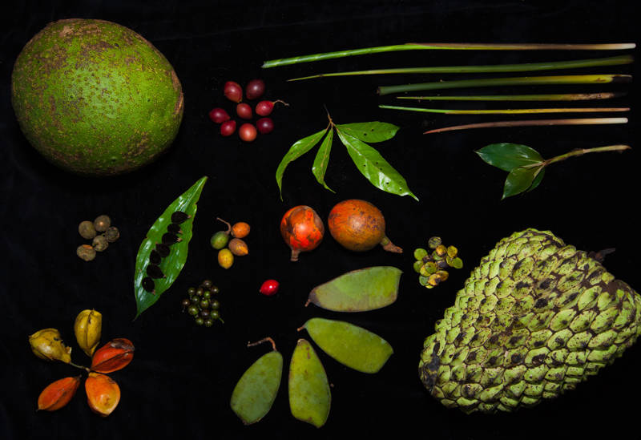

Hábitat y Ubicación Geográfica
Los bonobos son nativos de la República Democrática del Congo en África Central. Habitan en bosques tropicales húmedos y pantanosos.
Hábitos Alimenticios del Bonobo
| Tipo de comida | Ejemplos |
|---|---|
| Frutas | Mangos, plátanos, higos, frutas silvestres, etc. |
| Hojas | Variedad de hojas verdes, incluyendo hojas jóvenes de árboles y arbustos. |
| Brotes y Semillas | Brotes tiernos y semillas de diferentes plantas. |
| Insectos | Principalmente consumen frutas e hojas, pero ocasionalmente pueden consumir insectos. |
Hábitos reproductivos de los Bonobos
Los bonobos son animales muy sociales y utilizan el contacto físico, incluyendo el sexo, para fortalecer los lazos dentro de su grupo. La reproducción ocurre durante todo el año y las hembras dan a luz aproximadamente cada cinco a seis años.
Estado de conservación
Los bonobos están catalogados como una especie "En Peligro" por la Unión Internacional para la Conservación de la Naturaleza (UICN). La principal amenaza para su supervivencia es la pérdida de su hábitat debido a la deforestación y la caza ilegal.